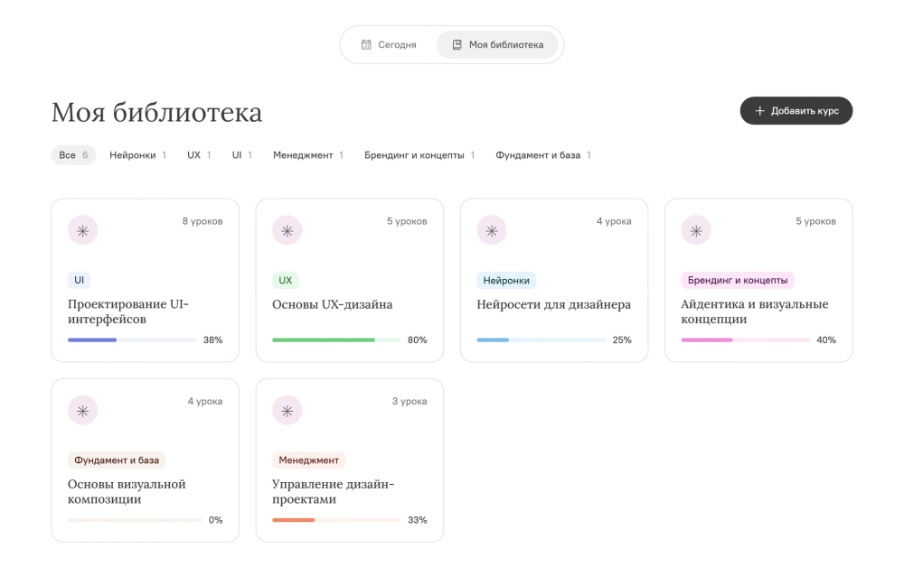
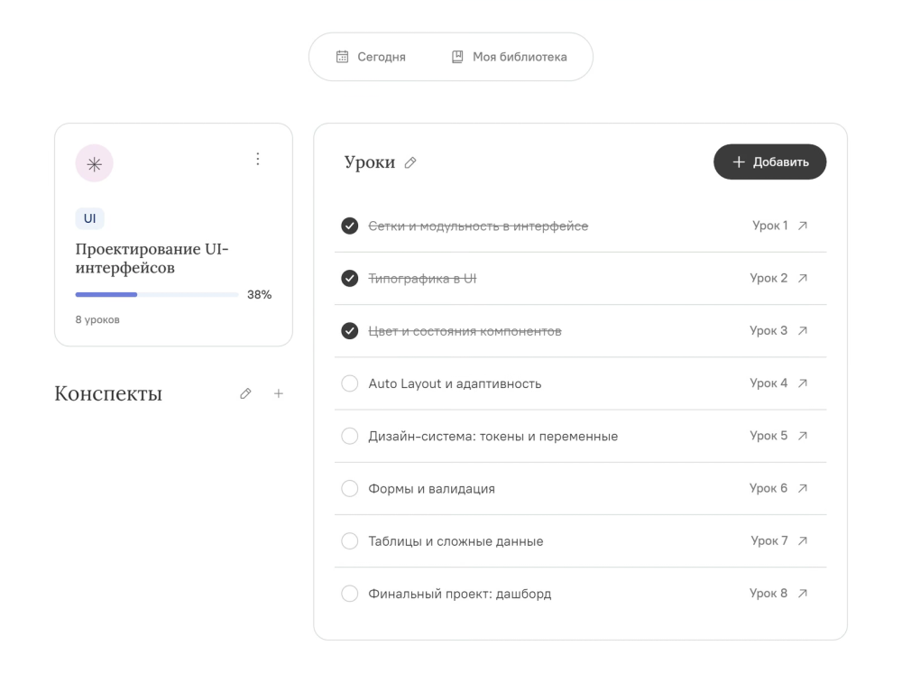

Studyspace
Задача
Видео и конспекты хранились в разных местах. Перед каждым занятием приходилось вспоминать, на каком уроке я остановилась.
Решение
Я собрала материалы в личный планер. На экране «Сегодня» видны текущий урок, ссылка на конспект и очередь. Отмечаю урок пройденным — планер показывает следующий.
От библиотеки к уроку
Библиотека и курс
Сначала выбираю направление, затем открываю курс. Цвет тега повторяется в индикаторе прогресса, а на странице курса уроки и конспекты собраны рядом.


От ссылки до занятия
Импорт и адаптив
Добавляю плейлист, проверяю названия и порядок уроков. Затем могу продолжить на телефоне с того же места.


Личное пространство для учёбы
Результат
Я спроектировала и собрала Studyspace для себя. Вход по email и права доступа в Supabase ограничивают доступ к учебным материалам.